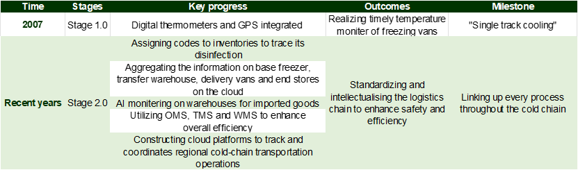
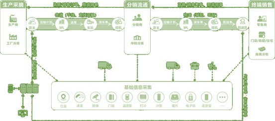
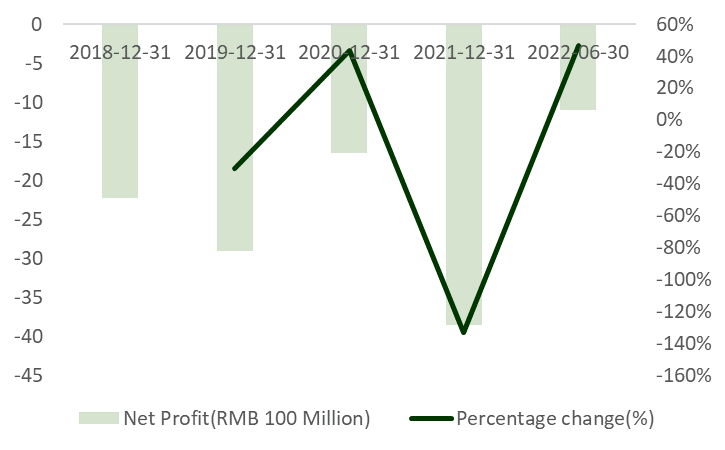
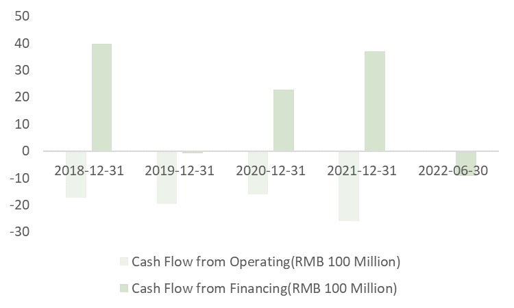

Abstract:
This paper examines the impact of digital transformation on the retail industry, specifically focusing on the fresh food industry. We begin by defining digital transformation and highlighting its advantages. We then analyze the current state of digitalization in the retail industry. Using the fresh food industry as a case study, we explore the effects of pre-warehouses on the industry's order volume and GMV. We also examine digitalization in logistics, including approaches, outcomes, challenges, and potential solutions. Next, we discuss the importance of data management for retail companies, outlining the common steps of the data management process. We analyze why Missfresh, a major player in the fresh food industry, failed in terms of data management and provide recommendations for improvement. Overall, this paper provides insights into the challenges and opportunities presented by digital transformation in the retail industry, with practical implications for retailers seeking to enhance their digital capabilities.
Content:
2. Digitalization Transformation Background
- 2.1 Digitalization Transformation Definition
- 2.2 Advantages brought by digitalization
- 2.3 Current situation in retail industry
3. Case study: take Fresh Food Industry as an example
- 3.1 Fresh food industry overview
- 3.2 Digitalization in Logistics
- 3.3 Data Management of retail companies
1. Introduction
Over the past decade, China's retail industry has undergone dramatic changes. From the rise of the mobile internet, which led to the take-off of e-commerce, to the emergence of the concept of "new retail", where internet giants try their hand at physical retailing to recreate this huge traditional industry through digital means, to the new crown epidemic that broke out in early 2020 and has recently resurfaced to accelerate the transformation of the way people purchase in China. The retail landscape is being disrupted and reshaped at an unprecedented rate, with new technologies, formats and business models emerging. The retail industry is experiencing perhaps the most intense competition in the market, and is also home to a number of leading companies that are determined to change and are at the forefront of digital capabilities.
2. Digitalization Transformation Background
2.1 Digitalization Transformation Definition
Digitalization methods for traditional industries can be broadly categorized into three categories: operation transformation, product service transformation, and business model transformation. Operation transformation the use of digital technologies to optimize internal processes and operations, such as automation, digitization of processes, data analytics, and robotics. Product service transformation uses digital technologies to enhance or transform the products and services offered by a traditional industry, including adding digital features to existing products or creating new digital products or services. Business model transformation involves using digital technologies to transform the way traditional industries operate and generate revenue, such as creating new revenue streams, offering new products or services, or adopting new business models. For instance, in the retail industry, the emergence of e-commerce has led to the adoption of new business models, such as drop-shipping or subscription services.
2.2 Advantages brought by digitalization
Reducing costs and increasing efficiency.
Digital transformation can help companies optimise internal processes and improve efficiency, thereby reducing unit product costs while increasing output. Digital transformation can include the application of technologies in automation, intelligence and data analytics to improve productivity and management efficiency and reduce costs.
Increasing conversion rates and customer unit costs.
Digital transformation can also be used to increase revenue and profitability through increased traffic, higher conversion rates and higher unit prices. This can be achieved through channels such as digital marketing and e-commerce, for example by attracting more leads through search engine optimisation (SEO) and social media marketing, as well as increasing customer conversion rates and customer unit prices through personalised recommendations and coupons.
Improve customer insight and pinpoint.
Digital transformation can help businesses better understand customer needs and behaviours so that they can target customers more precisely and offer products and services that meet their needs. Businesses can collect and analyse customer data through technologies such as data analytics and artificial intelligence to better understand customer needs and behaviours and target products and services.
Product and service innovation.
Digital transformation can facilitate product and service innovation, including the development of new digital products and services, or the improvement of existing products and services through digital technologies. Companies can use digital technology innovation to meet changing market needs and customer demands and gain an edge over their competition.
2.3 Current situation in retail industry
Retailers are exploring "Online Service" (Digital 2.0) and moving towards "Digital Intelligence" (Digital 3.0).
55% of the retail companies are still in the "online" (Digital 2.0) stage, about 30% are starting to move into "digital intelligence" (Digital 3.0), and about 30% have "platform/ecological" (Digital 3.0) capabilities. The number of companies with “platformize/ecologize” (Digital 4.0) ability is very small, accounting for only about 10%. At the same time, the surveyed companies have formed a consensus that "digital intelligence" and "platformisation and ecologisation" are the way forward for the digitalisation of retail enterprises.
Most retail enterprises still focus on front-end channels and traffic operation
At present, retail enterprises are still focusing on digital construction near the consumer end, with 70% of retailers focusing on online channels and their own platform construction and omni-channel membership operation. Less than 40% of retailers focus on data-driven merchandise management (selection, display and sales) and digital supply chain; and smart shop operation decisions (location, replenishment and staffing), which require a higher data and algorithm base. Only about 20% of retailers have made it a priority for them to develop.
Retailers are actively embracing organisational changes to drive successful digital transformation
67% of retailers believe that building an organisational structure and operating model to support digital transformation is difficult. 67% of retailers surveyed believe that establishing an organisational structure and operating model to support digital transformation is one of the three key success factors for digital transformation. Seventy per cent of companies have a direct reporting line to the head office. 70% of companies have a separate digital department at group/company headquarters that reports directly to the CEO. This drives digital transformation. of companies have not only set up digital centres at group level, but also 20% of companies have not only set up a digital centre at Group level, but have also established digital teams under each business line to achieve.
The digitalisation and business are fully integrated. Nearly 60% of companies of
companies are bringing in digital talent from outside (e.g. product managers, Nearly 40 per
cent of companies have embraced agile transformation, and 27 per cent have promoted digital
talent from outside (e.g. product managers, data scientists). Nearly 40 per cent of companies
have embraced agile transformation, and 27 per cent have driven changes in goal-setting and
performance appraisal mechanisms, such as moving away from KPIs. 27% have driven
changes in goal setting and performance appraisal mechanisms, such as the transition from
KPIs to OKRs.
3. Case study: take Fresh Food Industry as an example
3.1 Fresh food industry overview
Breaking down the core competitiveness of the fresh food industry: taking Dingdong Maicai and Miss Fresh as examples.
The value chain of the fresh food industry mainly includes four components: upstream procurement, regional processing centers, pre-warehouses, and users. Upstream procurement includes three methods: direct procurement from the source, self-branded processing, and brand/wholesaler procurement. After passing product quality inspections, the products are transported to regional processing centers in various cities, where they are further classified and processed before being transported to pre-warehouses for storage. After users place orders, the products are packaged and delivered to their hands.
How do stores affect a company's competitiveness? We will explore this question by breaking down the core competitiveness of the fresh food industr
3.1.1 Scale: GMV is driven by order volume and unit price
GMV refers to the total price of orders placed by users after participating in product discounts, but before using coupons, and does not include returns, shipping fees, or unsold orders. GMV depends on order volume * unit price.
From the supply side, order volume depends on the number of pre-warehouses * orders per warehouse; from the demand side, it depends on the number of purchasing users * purchase frequenc
3.1.2 Order volume: driven by the number of pre-warehouses and orders per warehouse
From the supply side, order volume depends on the number of pre-warehouses * orders per warehouse. For example, Dingdong Maicai's order volume scale and growth rate are significantly higher than Miss Fresh's. Miss Fresh's active users are defined as transaction users whose payment amount, excluding coupon subsidies, is greater than the cost of product sales. Dingdong Maicai's order volume increased from 199 million orders in 2020 to 387 million orders in 2021, a 95.0% growth rate; while Miss Fresh's effective user order volume decreased from 65.1 million orders in 2020 to 62.2 million orders in Q1 2021 (cumulative for the previous 12 months), a decrease of 4.5%. Dingdong Maicai's pre-warehouse expansion adopts an expansion strategy, with a larger number of pre-warehouses than Miss Fresh and Meituan Maicai. Dingdong Maicai's pre-warehouse quantity is growing rapidly, covering more areas in urban cities, and aims to expand into new markets and find new growth opportunities. Miss Fresh, on the other hand, chooses to adopt a retreat strategy in some markets, with a certain reduction in the number of pre-warehouses, aiming to cut off severely loss-making warehouses, optimize the model, concentrate on serving core clients, and increase unit price.
Orders per warehouse: driven by repurchase rate
Orders per warehouse depend on the user's repurchase rate. For example, Dingdong Maicai's monthly transaction order volume per user stays above 3 orders, while Miss Fresh's monthly transaction order volume per user is less than 1 order.
The member repurchase rate refers to the percentage of users who buy the Dingdong membership and place at least one order within a certain period of time after their first order, compared to all purchasing members.
Unit price: driven by core customer value, and customer value manifestation drives the increase in unit price
Unit price = product revenue/order volume, determined by core customer value, SKU category and quantity. Dingdong Maicai's unit price by GMV and product revenue in 2021 is 58.7 yuan and 51 yuan, respectively, showing an increase compared to 2019, mainly due to the manifestation of core customer value. Compared with Miss Fresh, Dingdong Maicai's overall unit price is lower. In 2020, Dingdong Maicai's unit price by GMV was 66 yuan, while Miss Fresh's core users' unit price by GMV was 98 yuan.
Dingdong Maicai's coupon subsidy has decreased. The proportion of coupon subsidies in GMV is decreasing, from 18.3% in 2019 to 12.4% in 2021. The decrease in subsidy intensity and the increase in unit price mean that the core customer recognition of Dingdong Maicai has strengthened.
The key influencing factors to increase unit price are: 1. Enhancing product competitiveness, including increasing SKU quantity, optimizing category structure and quality; 2. Improving user experience, including optimizing fulfillment processes and strengthening user service; 3. Enhancing word-of-mouth marketing and promoting membership programs.
Efficiency: Breaking down Dingdong Maicai's UE mode
The difficulty in profitability of Dingdong Maicai's pre-warehouse model lies in that its gross profit is difficult to cover fulfillment costs. According to data in 2021, Dingdong Maicai's average gross profit per order is 9.9 yuan (gross profit margin is 19%), and the average fulfillment cost per order is 18.8 yuan (fulfillment cost rate is 37%). On the UE level, the average loss per order is 8.9 yuan
Compared with the Shanghai mature warehouse experience, Shanghai, as Dingdong Maicai's most mature market, achieved profitability at the operational level in December 2021. Comparing its UE model, we found that the key influencing factors for profitability are: 1. Increasing unit price; 2. Improving gross profit margin level; 3. Increasing order volume to improve fulfillment efficiency.
3.1.3 How pre-warehouses affect the fresh food industry
The pre-warehouse model can provide consumers with instant delivery services of fresh daily necessities, improving the turnover efficiency of fresh food retail. The pre-warehouse model provides consumers with on-demand delivery services for fresh fast-moving consumer goods and other products within 1 hour by establishing small and medium-sized warehousing and distribution centers near residential areas or office buildings, mainly targeting cooking enthusiasts in first-tier and second-tier cities with high requirements for food quality. The typical fulfillment service chain of pre-warehouses is: fresh origin - regional warehousing center - pre-warehouse - consumer. Compared with traditional fresh food retailers, the value creation of pre-warehouses lies in: 1) Direct procurement from the source shortens the traditional fresh food retail supply chain, reducing intermediate markup and loss costs; 2) The entire supply chain is standardized and operated, including procurement, warehousing, processing, fulfillment, sorting, packaging, etc., which ensures product quality and reduces loss rates, solving the pain points of high loss rates and uneven quality of traditional fresh food retailers; 3) Collecting supply chain data effectively and accurately predicting user needs, guiding upstream production efficiency improvement.
Compared with other instant retail formats, the pre-warehouse model can meet consumers' demands for fast, diverse, and cost-effective fresh food delivery. Instant retail e-commerce mainly includes self-operated and platform models, and both SKU can basically meet users' daily cooking needs. The self-operated model mainly includes: pre-warehouses such as Miss Fresh, Dingdong Maicai, Meituan Maicai, and warehouse-store integration such as Hema Fresh and Yonghui Supermarket; the platform model mainly includes: O2O platforms such as JD Daojia and Meituan Flash Purchase. We believe that instant retail, especially the fresh food category, has many SKUs, low standardization, and the delivery timeliness also has certain limitations on the delivery range, so the scale effect is not so strong, and various formats are expected to coexist for a long time. Comparatively, we believe that:
The self-operated model has stronger control over the supply chain and better product quality than the O2O platform. Since the delivery personnel only need to deliver goods from a single store/warehouse to consumers in two points and one line, without going to different supermarkets to pick up goods, the delivery timeliness is also higher than that of the O2O platform. Therefore, the two self-operated models of pre-warehouses and warehouse-store integration are more able to meet users' demands for "fast, diverse, and cost-effective" fresh products.
Comparing the two self-operated models, 1) the pre-warehouse model has a higher cost-effectiveness of products and is easier to replicate and expand than the warehouse-store integration model. Taking Hema Fresh as an example, since the area of a single Hema store is about 5,000 square meters, the location is often in densely populated areas such as shopping malls, and the high cost of prime locations itself conveys the brand's concept to consumers. Therefore, Hema ignores "cost savings" and instead implements a high-end concept, which enables the company to sell products with higher unit prices and profit margins. On the other hand, the pre-warehouse is only used as a warehouse, with a single warehouse area of about 300 square meters, and the location is usually around high-density communities. The product price is lower than that of Hema, and it can meet users' demands for "fast, diverse, and cost-effective" fresh products while also being "cost-effective". At the same time, the lower location requirements of pre-warehouses make them more easily and quickly replicable and expandable, covering users that warehouse-store integration cannot cover. 2) The pure online pre-warehouse model cannot naturally attract customers, and the cost of acquiring customers is higher. However, because there are no offline consumers "picking and choosing" fresh products, the online pre-warehouse model can be more standardized and have a lower loss rate.
3.2 Digitalization in Logistics
3.2.1 Introduction
Logistics, especially Cold-chain transportation has witnessed rapid growth in terms of market size and coverage. Cold-chain transportation is of particular importance to Fresh food retailers to secure the timeliness of delivery and the level of “freshness” of products. The industry growth is stimulated by the policy dividends of warehouse base construction, storage facility upgrades which brought strategic potential for digitalization. Moreover, over the past years during pandemic, households have shifted to shopping for necessities online and receive instant delivery, meanwhile, the fondness for fresh food has spread across a wider audience, which increase the demand for Cold-chain transportation on the user end.
Consumption upgrade has also fueled the fast expansion of fresh food retailers like Freshippo, Miss Fresh and Instacart, who are moving down-market, and competing against community supermarkets and convenience store for the local customers and also competing against each other for the best solution to the “Last 3-km” fresh food purchase issue.
While the scale of these retailers increase and the market became more crowded, how to manage timely delivery and intelligent storage of goods, and ensure efficient delivery become the key breakthrough to be made. Therefore digitalization became a destined trend, which utilizes the online-database to store and aggregate the cross-department data, keeping track of the operation and make predictions, as well as sensors and trackers to monitor and coordinate the transportation process, it enhances the cost-benefit balance of the business. However, building a cloud system to integrate the logistics chain and digitalizing the information of inventories is costly and technically demanding, compounded onto the fact that cross-sector aggregation of data may be hard, digitalization of logistics itself is a challenge to fresh food retailers.
3.2.2 Approaches and outcomes
From Location theory:
Location theory has played an important role in the context of positioning of traditional retailers. The community around the store pretty much determines the number and value of the consumers, which triggers the competition to locate in more prosperous locations. However, as New retail took place, consumer acquisition has been largely shifted online, from B2C to O2O, being “close” to target consumers is no longer the only consideration, nonetheless, positioning the offline store within the larger logistics structure and implementation of efficient coordination across these structures to increase customer coverage, especially competing for the “Last 3 KM-shopping” market with local supermarkets is of higher priority.
Innovations based on the “Distributed Mini Warehouse” model:
Distributed Mini Warehouse is a key innovation for new retailers in fresh food sector to step toward digitalization, in the sense that it enables instant response to the ever-flooding-in online orders. Unlike traditional central-warehouse logistics model, distributed mini warehouse combines every off-line store with a 200-300 square meter warehouse story fresh inventories. As a distributed network, it is closer to end consumers, which directly resulted in timely delivery. On the other hand, traditional logistics model suffers from the conflict of economics of scale and timeliness, to be specific, previous model features a vertical B2C mode, inventories are first distributed through the central warehouse of a large scale to the logistics hubs in each city, which can only provide overnight delivery, which sacrifice the “freshness” for a seemingly cost reduction from scaling the operation.
However, due to the large initial investment, Distributed Mini Warehouse has been a controversial scheme, posing large risk for business to earn enough revenue to cover the up-front cost. Therefore, Freshippo's current logistics system is a form of altercation.
To be specific, it is a B2B2C mode, which implies inventories being sent first to the central warehouse from base and then delivered to each store and directly to customers. By preserving the B2B part, it utilizes the economics of the scale and use the B2C scheme to reach wider customers in more timely manner, in particular, Freshippo established the automated inventory pickup system in the form of suspended chain on the ceiling of each store.
Standardization and intellectualization of Cold-Chain transportation
Comparing to logistics transferring non-perishable consumer goods, cold-chain transportation enjoys more benefits from digitalization, from storage to package and delivery, temperature and humidity control are vital to inventory quality, in which IoT has a large part to play. In particular, GPS, thermometers are applied to keep track of the environment and products' condition and the former can be dynamically adjusted to the appropriate level through out the lifetime of the inventory.
Cold-chain digitalization has been entering into a new stage:
 The above structure describes how production, distribution, and retail processes are linked through cold-chain logistics and information is collected and aggregated throughout the progress, making everything trackable.
In the case of Freshippo, it has been constructing its own cold-chain logistics and requires only small portion of epiboly. According to the last disclose of data by the end of 2019, Freshippo has set up 48 Multi-thermosphere and Multifunctional warehouses in 15 cities, of which 11 are procession centers for raw and fresh products. Adding onto that, it also constructed Artery-Intown distribution system which allocates sufficient resources at critical transportation nodes and approaching downstream stops in a “radiation” manner. While generalization simplifies the coordination problem, digitalization has enabled establishment of product-specific delivery pattern, for example, porting certain sea animals to inland regions through water tanks which are adjusted for the product-tailored temperature and salinity, while fresh vegetables are transported via airfreight.
Efficient inventory management by cutting off middleman:
By direct-procurement from the bases and reducing several levels of distributers in the middles process, fresh food retailers like Freshippo can reduce the markup on the price to 69%, it is currently co-operating with more than 500 bases for farm product in 17 cities.
Implementing such structure also enables instant and accurate feedback from downstream of the inventory turnover condition, creating a Agile inventory system that can respond quickly to the fluctuation of consumer demand, dynamically change the type an d quantity of inventories according to estimation by models.
2.2.3 Challenges and potential solutions
The controversial of “Distributed Mini Warehouse” Mode
Undoubtedly Distributed Mini Warehouse secure timeliness delivery and freshness which are essential differentiation for fresh food retailers compare to traditional local convenience stores, however, the deficiencies are also obvious. It requires large amount of initial investment to construct these warehouses, as well as acquiring customers, launching marketing campaigns and paying for labor expenses. Therefore, the first batch of retailers experimenting the model are still struggling to break even.
One example is MissFresh who's execution cost sky-rocketed to 36% of the total revenue after implementing the Distributed Mini Warehouse scheme in 2018, and the cost remained as large as 26% in 2020 after series of approaches taken to cut-down Marketing and Administration expenses. Therefore, ending up in the vicious cycle, in which less advertisement and user loyalty programs led to losing traffic towards its competitors, and increasing logistics cost increase the pricing of inventory and further repelled buyers off, and incurred larger expense on new customer acquisition, meanwhile, hindered the UPT increase.
If the model is to be preserved in the future, there should be the trend of innovations made to sustain a higher margin, including:
1. Increasing UPT(Unit per transaction)
Unavoidably, distributed mini warehouse model increase the delivery cost from store to end users, which can hopefully be reduced by utilizing economics of scale. Profitability of such model depends on the relative magnitudes of UPT and SKU (Stock Keeping Unit), many fresh food retailers in practice set limit of order amount to enjoy free delivery in order to reduce execution costs. The approach has been proven effective due to the low price elasticity of consumers and higher average unit cost of the products compared to traditional supermarkets.
2. Developing in-house brands with higher margin
Since the model secures better timeliness, inventory types expand from imported fruits and diary to more perishable and lower-value goods, such as frozen meat and vegetables. Therefore, Freshippo and others are increasing the percentage of in-house brands or pre-made food which typically have a margin of 30%, moreover, utilizing dynamic trackers to better adjust the warehouse conditions to reduce the rate of loss, as well as including FMCG ( Fast Moving Consumer Goods) into their inventory can help achieve a higher margin.
3. Increasing the density of orders
While digitalization of operation features low marginal cost, increasing the density of orders will result in significant reduction in execution cost from dilution of administration and capital expenses. Typically, increasing the current order level of 800/day to 1200/day could decrease the execution cost by 8.6%. This could be achieved partly by improving the user experience of the online order app, thus increase the consumer loyalty and extend the utility boundary.
Low concentrated and small-players-dominated market increases barriers of digitalization:
Chinese cold-chain transportation industry is distributed with 99% small and medium firms which are unevenly positioned geographically, making it even harder to regulate, let alone industry-level digitalization and information aggregation. Even though the industry has witnessed expansion in the past few years, especially undergoing certain technological reforms, it is nowhere near satisfying the need of fresh food retailers. To begin with, small players lack the capital and human resources for digitalization, and successful digitalization brings little benefits given their limited scale and regional operation. Moreover, the basic standard refrigerated trucks are still insufficient, not to mention those highly intellectualized ones. All these leading to a two-times-higher damage rate of fresh goods in China compared to Developed countries.
Therefore, the breakthrough point for fresh food retailers of large scale like Freshippo still lies in developing in-house Cold-Chain transport network, and decrease the dependence on third parties. Given their scale and talent base provide incentive and ability to establish highly digitalized logistics network.
3.3 Data Management of retail companies
3.3.1 Common steps of data management process
Fresh food e-commerce is not a simple transformation of the offline fresh food business, but an all-round reconstruction. The chain of the fresh food business is very long, from selection of suppliers, procurement, inspection, replenishment, logistics, warehousing, to order delivery, etc., all included. For data management of the above chain, there are 3 common steps:
First of all, the first step in digital management is to sort out business and standardize business actions. For example, the supplier management system is responsible for procurement, the logistics and warehousing system operates the transportation and storage of goods in various places, and the order management system and the direct-to-consumer interface are constantly updated.
The second step is to mine the value of data. Let the algorithm optimize business performance, reduce processing loss, refine storage and replenishment, make personalized recommendations to users, and improve the efficiency of order sorting and delivery. For example, Chen Hualiang, vice president of Missfresh Intelligent Data, said that many products in the fresh food business are short-term storage products, and the requirements for cold chain logistics are also very high. Take a watermelon as an example to see the effect of digital "selling melons". First of all, Missfresh's directly-operated products will be traced from the production place of watermelons to predict the output, and then based on these data, corresponding resources will be deployed when deploying warehousing and logistics, and finally personalized recommendations will be made to customers at the sales end. The feedback and interaction formed by each link in the process, the process of purchasing watermelons, putting them on the shelves, and shipping and replenishing them, has achieved intelligence. In this process, data and algorithms will continue to iterate and accumulate to adapt to the changing needs of the market.
The third step is to achieve fewer people. At present, the entire fresh food retail industry is still a labor-intensive industry. As far as the current level of information technology is concerned, it is impossible to achieve absolute unmanned operation, but we will start with fewer people, and gradually introduce more digital management tools and automation equipment, so as to reduce the number of people in fresh retail operations as much as possible and improve operational efficiency
3.3.2 Why Missfresh fails?
The successful cases of Internet e-commerce, Suning and Jingdong, they are not facing a diversified market, do not need to deal with complex supply chain issues, and the cost and profit margins are extremely high. Standardization and high unit prices allow Internet e-commerce to be sustainable in terms of cost control and price space.
Looking back at fresh food e-commerce, from the perspective of cost control, the cost of warehousing and logistics is high, and the front warehouse model adopted by Missfresh has the highest cost. Northeast Securities once released a research report and estimated that taking a 300-square-meter front warehouse as an example, assuming that the unit price of a customer is RMB 60, and the order volume in a single day is about 600~1400, then the performance cost of the front warehouse model is still as high as RMB 10~13/order, basically surpassing all fresh food e-commerce models. Compared with the traditional fresh food batches, fresh food e-commerce companies do not have cost and price advantages at all, and cannot forcefully squeeze the fresh food supply side. From the perspective of price space, fresh food e-commerce has extremely high management requirements due to expired fresh food, product diversity, relatively transparent prices, and consumers' general price sensitivity. Although continuous subsidies can expand the scale in the short term, it is difficult to sustain.
Figure 1: Profitability of Missfresh
 Source: WindFigure 2: Cash flow of Missfress
 Source: Wind3.3.3 How to improve?
An important reason for the failure of Missfresh is that it stimulates sales more through digitalization, rather than reducing costs and increasing efficiency for product management. This is the logic of Internet e-commerce, but makes little sense in fresh food e-commerce, as mentioned above.
For product management, using algorithms to empower product management rather than sales scale. Through the management of the consumption data of existing commodities, based on the service provider's ability to monitor the entire network, select products for customers with continuous consumption capabilities, capture the big data from prices and reviews to manage commodities, users, and supply chains.
Before the management cost cannot be solved, it is the best choice not to expand blindly and keep it small and concise. If fresh food e-commerce wants to continue to make profits, it must return to the essence of business, increase prices, and reflect the value of services, because personnel distribution also has costs. Therefore, service differentiation for more affordable consumers would be the next step.